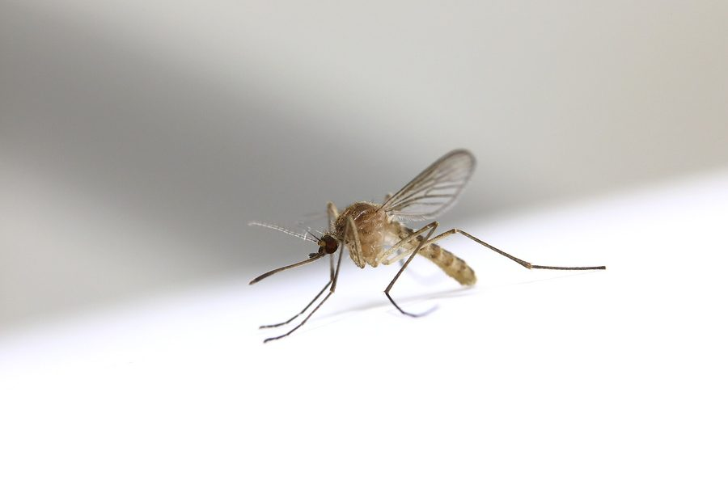
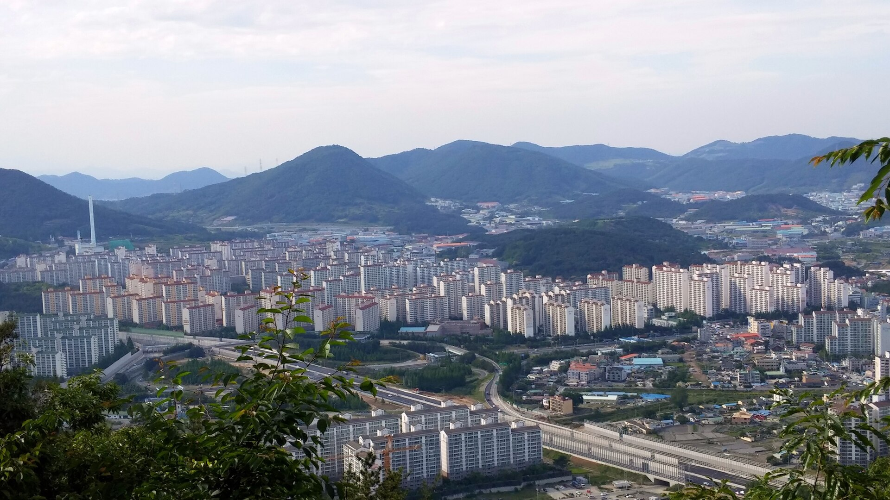
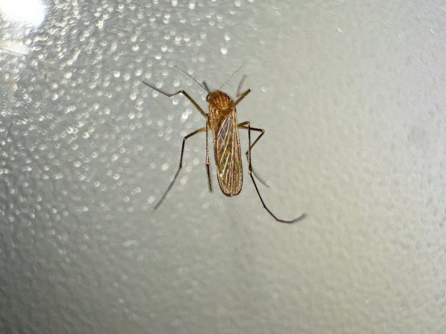
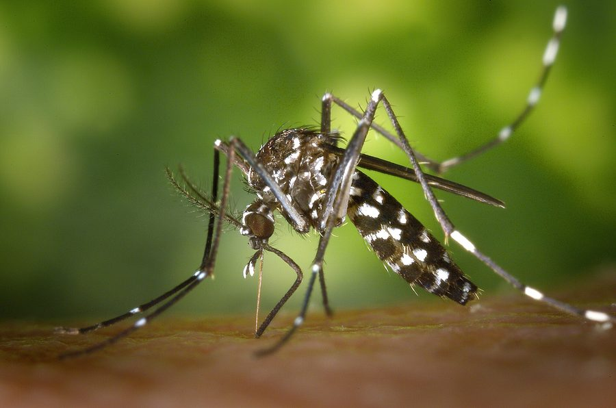
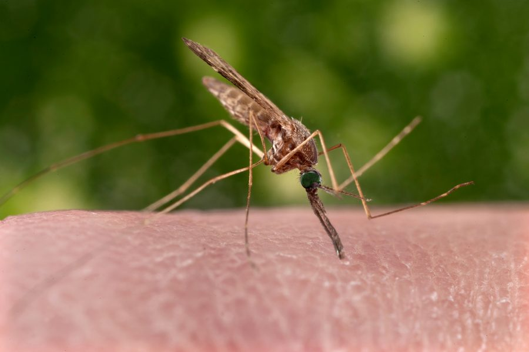
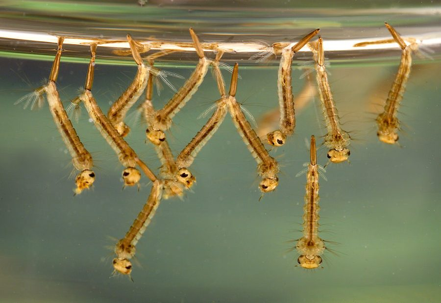
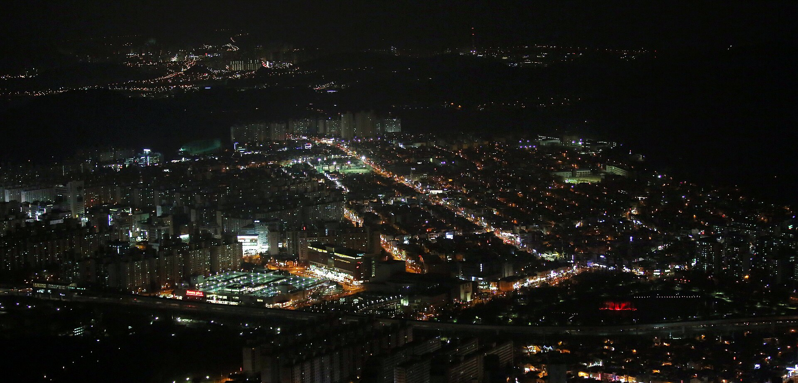

빨간집모기밤에 집 안으로 들어오는 가장 흔한 모기웨스트나일열방충망 점검, 저녁 환기 때 조심

실제 날씨
오늘 모기지수
오늘 한눈에
불러오는 중이에요
날씨를 불러오는 중이에요.
막대가 높을수록 모기가 많아요. 검은 막대가 지금, 파란 막대가 가장 많은 때예요.
날씨를 불러오면 알려드려요.
잡은 모기나 벽에 앉은 모기를 찍어 보세요. 우리 주변 모기 4종 중 무엇에 가까운지 AI가 알려드려요.
사진은 판별에만 쓰고 저장하지 않아요. 보내기 전에 사진 속 촬영 위치 정보를 지워요. AI가 본 참고용 결과이고, 의학적 판단이 아니에요.
이렇게 찍으면 잘 알아봐요
날씨를 불러오는 중이에요.
실제 날씨가 연결되면 5일 전망을 보여드려요.
17개 읍·면·동을 발생원 자료와 실제 날씨로 비교했어요.
모기는 고인 물이 있는 곳에서 번식해요. 원이 크고 색이 진할수록 발생원이 몰려 있는 동네예요.
불러오는 중이에요.
실제 날씨와 김해 발생원 자료로 계산했어요.





알·유충·번데기 세 단계가 전부 물속에서 일어나요. 일주일에 한 번만 고인 물을 비워도 어른 모기가 되기 전에 끊을 수 있어요.
모기는 무는 건 전부 암컷이에요.오늘의 한 마디

누르면 우리 동네 지도에 표시돼요. 지금은 시험판이라 저장되지 않아요.